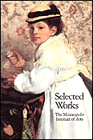

The Minneapolis Institute of Arts
Main Menu ~ Services and Resources ~ Museum Shop ~ Gifts ~ Postcards ~ Posters ~ Slides ~ Video Tapes
Catalogs
 20k
African, Oceanic, New World Cultures
- Assemblage of Spirits: Idea and Image in New Ireland, paperback $17.95.168 pages, 86 color illustrations and 27 black and white illustrations.
- Intelligence of Forms: An Artist Collects African Art, paperback $40.00.
Asian Arts
- The Asian Galleries, paperback $5.00 and hardcover $10.00. 112 pages, 26 color illustrations and112 black and white illustrations.
- Jewel Rivers: Japanese Art from The Burke Collection, paperback $35.00. 288 pages, 65 color illustrations and 92 black and white illust.
- Otsu-e: Japanese Folk Painting, paperback $14.95
Cookbooks
- When Friends Cook, hardcover $19.95. 304 pages, 15 illustrations.
Decorative Arts
- The American Craftsman and the European Tradition, 1620-1820, hardcover $65.00. 295 pages, 32 color illustrations and163 black and white illustrations.
- Choice of the Private Trader: The Private Market in Chinese Export Porcelain illustrated from the Hodroff Collection, hardcover $80. 298 pages, 348 color illustrations and 1 black and white illustration.
- English and American Silver: The Collection of The Minneapolis Institute of Arts, paperback $25.00 and hardcover $40.00. 312 pages, 10 color illustrations and 728 black and white illustrations.
- Minnesota 1900: Art and Life on the Upper Mississippi, hardcover $65.00
- Sweden: A Royal Treasury, 1550-1700, paperback $16.95. 194 pages, 92 color and 40 black and white illustrations.
- Worcester Porcelain: The Klepser Collection, hardcover $40.00. 49 color and 218 black and white illustrations.
- World of Art Deco, paperback $13.50
General Information
- The Art of Collecting: Acquisitions at The Minneapolis Institute of Arts, paperback $9.95. 115 pages, 77 black and white illustrations.
- Selected Works: The Minneapolis Institute of Arts, paperback $14.95. 269 pages, 98 color and 146 black and white illustrations.
- Their Splendid Legacy: The First 100 Years of The Minneapolis Institute of Arts,
hardcover $9.95. 102 pages, 63 black and white illustrations.
- Celebrating 50 Years a Trustee: Bruce B. Dayton Collection, paperback $19.95. 206 pages, 155 color and 40 black and white illustrations .
Paintings, Prints and Drawings
- 500 Years of Sporting Books, Manuscripts, Prints, and Drawings from the Collection of John H. Daniels, paperback $14.95. 63 pages, 12 color and 14 black and white illustrations.
- Minnesota Celebrates Matisse, paperback $9.95. 18 pages, 13 color and 15 black and white illustrations.
- Minnesota 1900: Art and Life on the Upper Mississippi, hardcover $65.00
- Monotypes by Maurice Prendergast, paperback $9.95. 162 pages, 53 color and 16 black and white illustrations.
- Binationale: German Art of the Late 80's, paperback $10.00. 320 pages, 104 color and74 black and white illustrations.
- Regency to Empire: French Printmaking, 1715-1814, paperback $40.00. 370 pages, 16 color and 160 black and white illustrations.
Photography
- Alfred Stieglitz's Camera Notes, paperback $27.00
- The Making of a Collection: Photographs from The Minneapolis Institute of Arts, paperback $9.98. 15 color and 151 black and white illustrations.
- Lyrical Documents: The Photographs of Robert Gene Wilcox, paperback $9.95. 48 pages, 32 black and white illustrations.
- Martin Weinstein's Gifts to the Collection, paperback $1.00. 28 pages, 21 black and white illustrations.
- The Modern Pictorialism of D.J. Ruzicka, hardcover $9.95. 112 pages, 55 black and white illustrations.
- Photos Beget Photos, paperback $13.50. 60 pages, 11 color and 21 black and white illustrations.
Textiles
- The Decorative Thread: Embroidery, paperback $9.95. 36 pages, 8 color and 15 black and white illustrations.
- European Tapestry in The Minneapolis Institute of Arts, hardcover $75.00. 476 pages, 61 color and 157 black and white illustrations.
- Intimate and Intense: Small Fiber Structures, paperback $9.95. 104 pages, 32 black and white illustrations.
- The Nonessential Thread: Brocade, Silks to Synthetics, paperback $9.95. 34 pages, 9 color and 13 black and white illustrations.
- The Pile Thread: Carpets, Velvets, and Variations, paperback $9.95. 36 pages, 10 color and 14 black and white illustrations.
Main Menu ~ Services and Resources ~ Museum Shop ~ Gifts ~ Postcards ~ Posters ~ Slides ~ Video Tapes